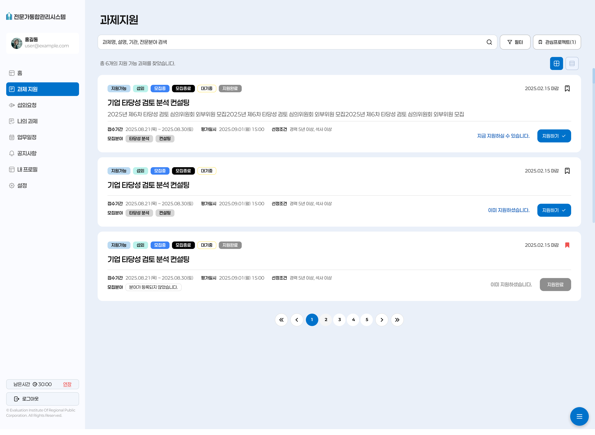
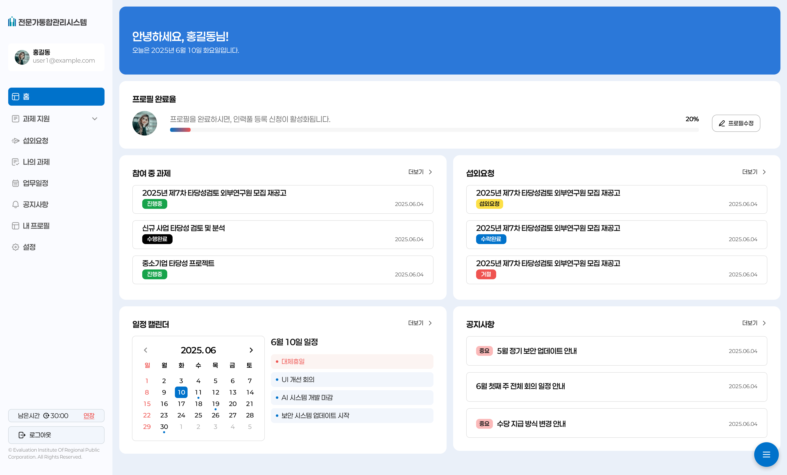
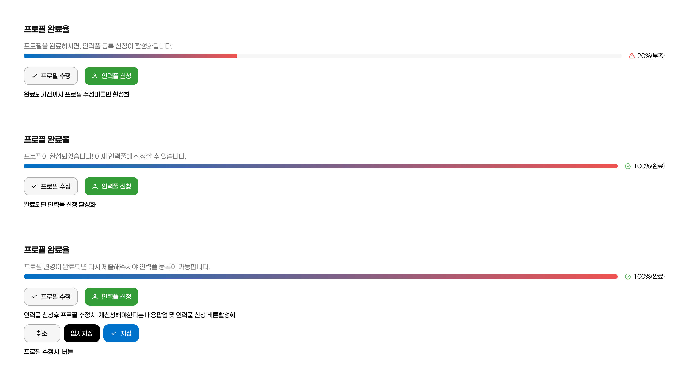

01
분산된 과제지원 프로세스
전문가 등록부터 선정·활동·평가·증명서 발급까지 여러 시스템과 문서에 흩어진 채 운영되고 있었습니다.
UX Case Study · 02
Workflow Design & Information Architecture
전문가 이용자가 과제, 일정, 수당, 공지, 프로필 상태를 한 화면에서 확인할 수 있도록 설계한 업무 대시보드입니다.
02 / Problem
01
전문가 등록부터 선정·활동·평가·증명서 발급까지 여러 시스템과 문서에 흩어진 채 운영되고 있었습니다.
02
전문가 이용자와 운영자·관리자는 필요한 정보와 화면 구성이 다름에도, 기존 요구사항은 역할 구분 없이 기능 중심으로 정리되어 있었습니다.
03
방대한 RFP 요구사항이 화면 목록 수준에 머물러 있어, 업무 흐름 관점의 구조화가 필요했습니다.
03 / Challenge
기능 목록만으로는 역할, 상태, 업무 흐름과 시스템 경계를 설명할 수 없었습니다.
01
RFP 분석
Analysis
02
요구사항 구조화
Structuring
03
Workflow 설계
Workflow Design
04
프로토타입
AI-assisted Prototype
05
Product
UX Strategy
Deliverables. RFP 분석 · 발주처 회의 피드백 · 요구사항 구조화 · Role & Status 정의 · Workflow 정의 · UX 설계 원칙 4가지
04 / Before · After
요구사항을 화면 단위로 나열하지 않고, 역할·상태·다음 행동이 이어지는 구조로 재정의했습니다.
Before
After
05 / Workflow
전문가의 지속적인 활동 Lifecycle과 공모·심의 중심의 업무 Workflow를 분리하고, 각 축의 상태 변화와 다음 행동을 구조화했습니다.
Expert Lifecycle
01
등록
02
자격/정보 관리
03
활동
04
이력·증명
05
지속 관리
Program & Review Workflow
01
공모 생성
02
신청
03
접수/검토
04
심의
05
선정
06
결과 관리
06 / Product Strategy
01
Role-based UX
전문가 · 운영자 · 관리자 화면과 접근 권한을 분리 설계
02
Status-based UX
업무 단계별 상태에 따라 노출 정보와 가능한 행동이 달라지도록 화면 흐름 구성
03
Workflow Design
전문가 Lifecycle과 공모·심의 Workflow를 분리하고, 각 단계의 상태 변화와 다음 행동이 이어지도록 설계
04
Information Priority
과제 · 일정 · 수당 · 프로필 상태를 한 화면 대시보드에 배치
07 / Design System Application
반복 UI 패턴과 Figma Variables 기반으로 상태 중심 UX를 일관되게 구현
전문가 상태, 과제 단계, 일정, 수당, 공지, 프로필 정보가 여러 화면에서 반복되기 때문에 기능별 화면을 개별적으로 디자인하기보다 상태·역할·행동 기준의 공통 UI 패턴을 먼저 정의했습니다.
01
전문가 상태, 과제 단계, 일정, 수당, 공지, 프로필 정보가 여러 화면에서 반복되기 때문에 상태·역할·행동 기준의 공통 UI 패턴을 먼저 정의했습니다.
02
Figma Variables와 컴포넌트 기준을 활용해 색상, 상태 표현, 정보 위계, 버튼 상태, 폼 상태, 테이블 밀도, 카드 레이아웃 기준을 정리했습니다.
03
Expert Lifecycle과 Program & Review Workflow에서 반복되는 상태·행동·정보 표현을 공통 UI 패턴으로 연결했습니다.
08 / Implementation
Prototype에서 검증한 Workflow와 상태 정책을 실제 구현 화면으로 연결했습니다.

지원가능·모집중·대기중·지원완료·모집종료·중지 — 6단계 상태를 카드 상단 뱃지로 동시에 표현해 사용자가 다음 행동을 즉시 판단할 수 있도록 설계했습니다.

역할과 상태에 따라 가능한 행동만 노출되도록 CTA 우선순위를 정리했습니다.

누락 정보와 다음 보완 행동을 시각적으로 안내해 전문가가 스스로 상태를 관리할 수 있도록 설계했습니다.
09 / What I Actually Did
01
단독 수행
RFP 14개 항목을 사용자 역할, 시스템 경계, 업무 흐름 기준으로 직접 구조화했습니다.
02
단독 수행
Expert Lifecycle과 Program & Review Workflow를 정의하고, 정보구조 설계 및 화면 정책을 수립했습니다.
03
단독 수행
Figma Make React 프로토타입으로 흐름을 검증한 뒤 전체 화면 UX/UI 설계와 구현 검수를 진행했습니다.
04
개발팀과 화면 정책, 엣지케이스를 협의하며 구현을 지원했습니다.
10 / Impact
01
RFP 14개 요구사항을 Role · Status · Workflow 중심으로 재구조화했습니다.
02
역할·상태·업무 흐름을 공통 기준으로 정의해 PM·개발·디자인 간 동일한 제품 구조를 공유했습니다.
03
전문가 Lifecycle과 공모·심의 Workflow를 분리하고, 각 단계의 상태 변화와 다음 행동이 이어지도록 설계했습니다.
RFP 요구사항을 Role · Status · Workflow 기준으로 구조화해 복잡한 기능 요구를 일관된 화면 설계 기준으로 전환했고, 검토 과정에서 변경된 요구사항을 화면 정책과 UI에 반영하며 제품 구조의 일관성을 유지했고, 구현 화면 검수까지 동일한 UX 기준을 적용했습니다.
11 / Key Learnings
01
복잡한 Enterprise 서비스는 기능보다 Workflow가 먼저 설계되어야 한다.
14개 요구사항을 화면 단위로 나열했다면 기능 목록에 그쳤을 것입니다. 전문가의 지속적인 활동 Lifecycle과 공모·심의 Workflow를 분리하자 역할별 화면 구조와 상태별 행동 기준이 명확해졌습니다.
02
역할보다 상태가 UX를 결정한다.
전문가 · 운영자 · 관리자라는 역할 구분만으로는 화면을 설계할 수 없었습니다. 접수 전 · 검토 중 · 심의 후 · 선정 완료처럼 업무 상태가 바뀔 때마다 보여줄 정보와 가능한 행동이 달라졌습니다.
03
AI는 설계를 대신하는 것이 아니라 빠르게 검증하는 도구였다.
Figma Make 프로토타입은 최종 화면이 아니라 업무 흐름 가설을 검증하는 수단이었습니다. 검증 이후의 설계 판단은 다시 사람의 몫이었습니다.
04
핵심 역량
이 프로젝트가 증명한 역량: